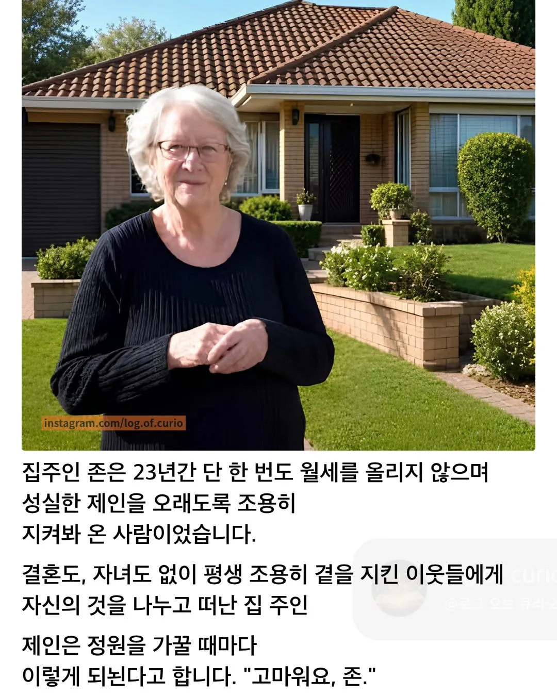

한국이었으면......
https://www.nine.com.au/australia-news/a-current-affair/melbourne-tenant-inherits-rental-from-landlord-20220525-p5rbch.html

한국이었으면......
https://www.nine.com.au/australia-news/a-current-affair/melbourne-tenant-inherits-rental-from-landlord-20220525-p5rbch.html
댓글
수집 당시 댓글 16개
영화의한장면 · 4 일 전
유언이었나?
골드스타 · 4 일 전
아시안은 상속을 할수 없습니다 이 집은 제껍니다
게이심슨 · 3 일 전
원숭이가 집을 소유한다고요? 하하하 당신 농담이 과하네요
아카네리제 · 3 일 전
그놈의 한국이었으면 한국이었다면 ㅇㅈㄹ
뫼엥이란뭘까 · 3 일 전
ㄹㅇ 걍 저 집주인의 성향인거지 해외고 한국이고 뭔 상관이고ㅋㅋ
거짓오름 · 3 일 전
한국이였으면 자녀가 바로 유류분 청구로 뜯어냄
ASSH0L3 · 3 일 전
느그 짱나라에서 그러는거 아니고?ㅋㅋ
거짓오름 · 3 일 전
왜화냄? 우리나라나 중국이나 민족성 다를게 없는데
ASSH0L3 · 3 일 전
화가 아니라 짱나라 비웃은건데?
토끼굴 · 3 일 전
근데 배경이 그 집이라면 슥 봐도 관리 개빡세게 한 티가 난다 ㅋㅋㅋ
불멸의러너 · 3 일 전
서양권은 정원관리 안하면 벌금먹이는거아님? ㅋㅋ
코흘리개튜브 · 3 일 전
벌금때문도 잇겟지만 그거만이라고 하기엔 너무 잘되어있는데? ㅋㅋ
긔요미티모 · 3 일 전
사족 ㅂㅁ
싹퉁뱅이 · 3 일 전
23년간 한번도 월세 안올렸으면 죽을때까지 살아야지 집을 샀어도 그거 렌트 돌리고 저기에 살아야지
퍼비오 · 3 일 전
이야 낭만이네
ParkTeria · 3 일 전
한국이었으면~ 한국이었으면~ 븅신련들 평생 그렇게 살아라 맨날 뉴스에서 병신들 얘기만 나오니까 진짜 나라가 즈그들처럼 븅신들만 사는줄 아나 나도 아래 세입자들 집사고나서 첫 세입자들이라 그냥 돈 안올리고 그대로 사는 중인데 내 바로 윗집만 해도 1억 4천 받던거 기존 세입자 쫒아내고 2억에 새로 받았단다. 씨발 맨날 좆같은 사례들만 기레기새끼들이 쳐올리니까 세상이 지들 생각처럼 돌아가는줄 알지